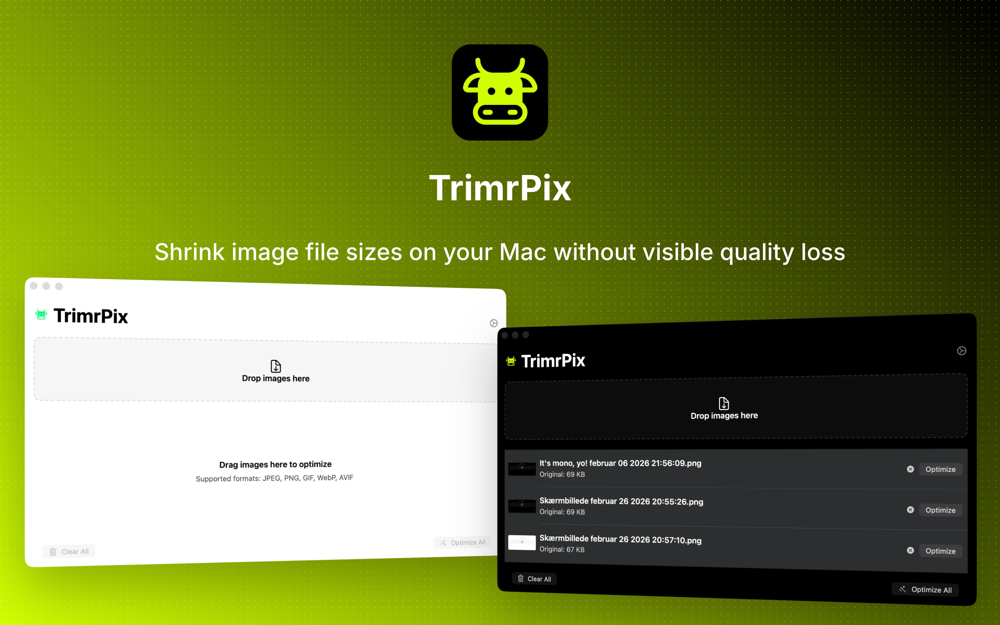
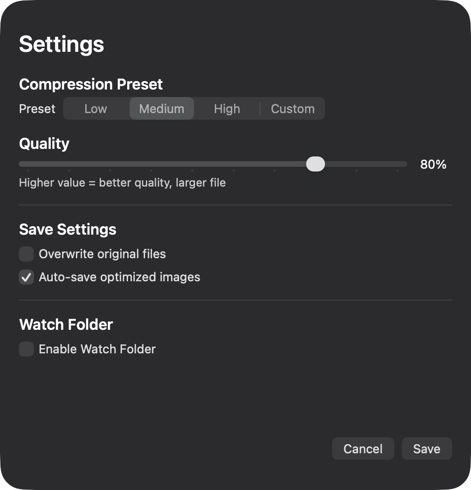
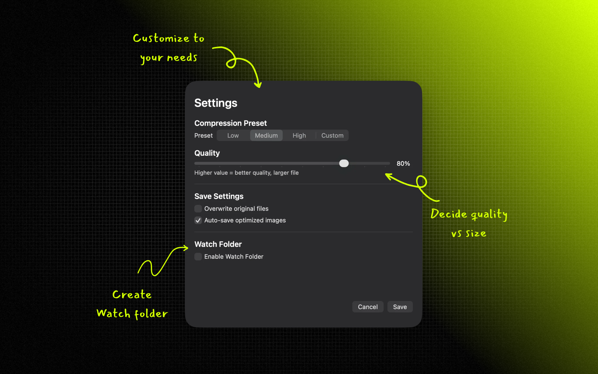

Reduce size by up to 80%
Smaller files in many cases with the quality you see preserved.
Now on Mac and iOS
Shrink image file sizes on your Mac without visible quality loss. Drag, drop, optimize, and save space — fast, private, and fully offline.



Built for Mac. Fast, private, no account required.
Smaller files in many cases with the quality you see preserved.
No uploads, no cloud. Everything runs on your Mac.
One-time purchase. Download and use — no sign-in.
Optimize JPEG, PNG, GIF, WebP, AVIF, and HEIC in one app.
Drop hundreds of images, hit optimize, save time.
Auto-optimize new images added to a folder.
Get TrimrPix on the App Store for Mac
Download on the App StoremacOS 15.2 or later · $1.99
TrimrPix supports JPEG, PNG, GIF, WebP, AVIF, and HEIC. Optimize all of them from one drag-and-drop interface.
It depends on the image and settings. Many images can be reduced by 30–80% while keeping visual quality high.
TrimrPix is a one-time purchase of $1.99 on the App Store. No subscription and no in-app purchases.
Yes. All processing happens on your Mac. Your images never leave your device.
TrimrPix requires macOS 15.2 or later.
Yes. Add as many images as you like and use batch optimization. Watch Folder can also auto-optimize new images in a folder.